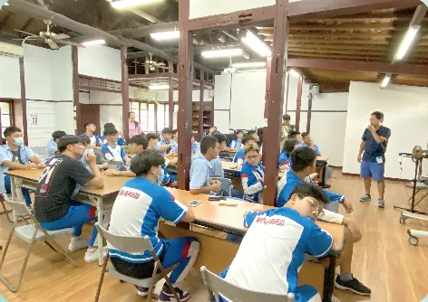
📖
人文關懷
培養具有人文關懷及服務態度的花中人。
Cultivate a humanistic mind to care and a willingness to serve in our students.
亮點花中文學獎、作家詩人駐校指導、校友作家大師講座
ABOUT
從日治時期的花蓮港中學校出發，八十餘年間隨時代更名改制，始終立足花蓮。
VISION
人文關懷、科學思維、國際視野，是花中人的三條路徑。

培養具有人文關懷及服務態度的花中人。
Cultivate a humanistic mind to care and a willingness to serve in our students.
亮點花中文學獎、作家詩人駐校指導、校友作家大師講座
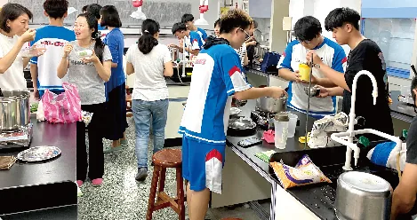
激發具有科學思維及邏輯判斷的花中人。
Stimulate HLHS students' scientific thinking and logical judgment.
奧林匹亞競賽、科展、旺宏科學獎、數理資優班、科學傳承營……花中的科學活動，請見下方專區。
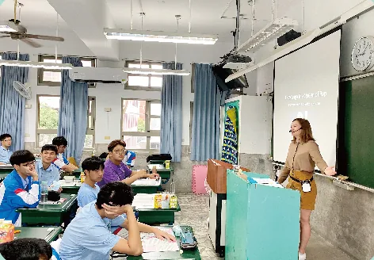
打造深具國家認同及國際視野的花中人。
Deepen HLHS students' national identity and expand their global perspective.
亮點日本教育旅行（每年一次）、姊妹校日本八重山高校、雙語教學
COMPETENCIES
花中的學生圖像「六力」，與國際深度學習（NPDL）所推動的 6Cs 全球素養互相對應。其中學習力對應協作（Collaboration），實踐力對應公民素養（Citizenship）。
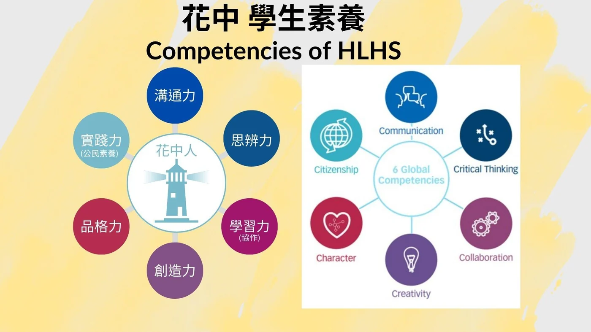
「培養富有公民素養、能解決真實問題的下一代」是花中的任務。六力是我們對學生樣貌的期待，6Cs 則提供了與世界對話的共同語言，讓老師在設計課程時，能清楚知道要培養哪一種素養。
願景以天下為己任．惟詩書敦其仁
任務培養富有公民素養、能解決真實問題的下一代
花中以「公民素養」為例，訂出老師與學生都能對照的深度學習進程。
學生看：議題投入度
學生看：多元文化之同理程度
學生看：永續環境理解度
學生看：問題解決任務安心感
學生看：數位資訊素養程度
DEEP LEARNING
從核心團隊增能、教師社群經營，到學生課程實踐，花中以 NPDL 深度學習帶動課堂的改變。
掌舵的核心團隊先學、先做
讓老師在社群中互相成就
把深度學習帶進教室
提早規劃，把時間切出來
有安全感、沒有批判、建立信賴
從小處開始，成為同儕榜樣
拉進外部資源，解決教師實際遇到的問題
鼓勵教師嘗試
破冰分組 → 技巧說明 → 概念構圖實作 → 閱讀練習（環保、自然、生命教育、性平等議題文章）→ 世界咖啡館 → 發表分享。並以前測、後測看見學生在各向度的進步，逐步精緻課程。
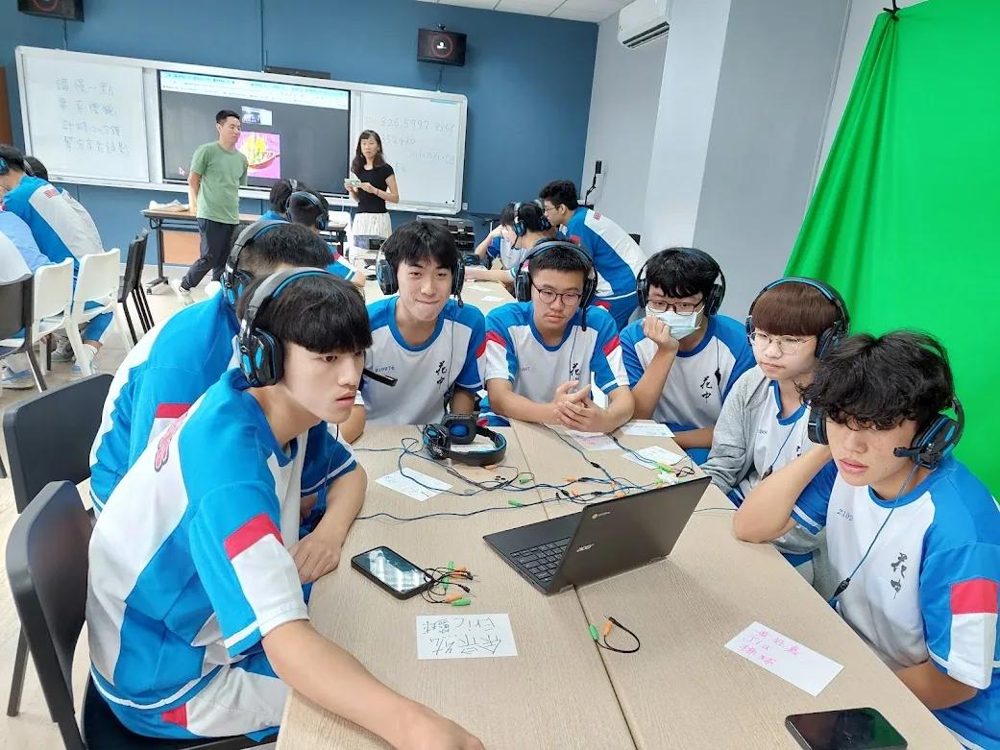
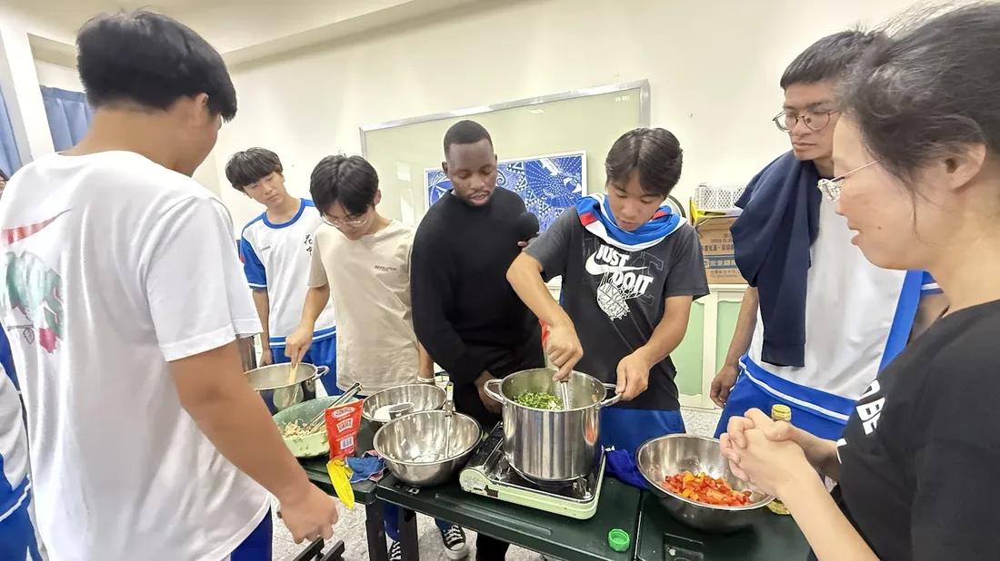
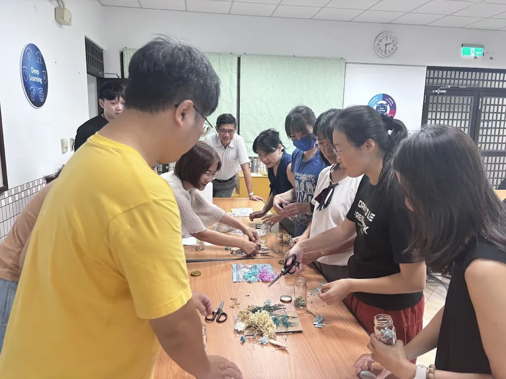
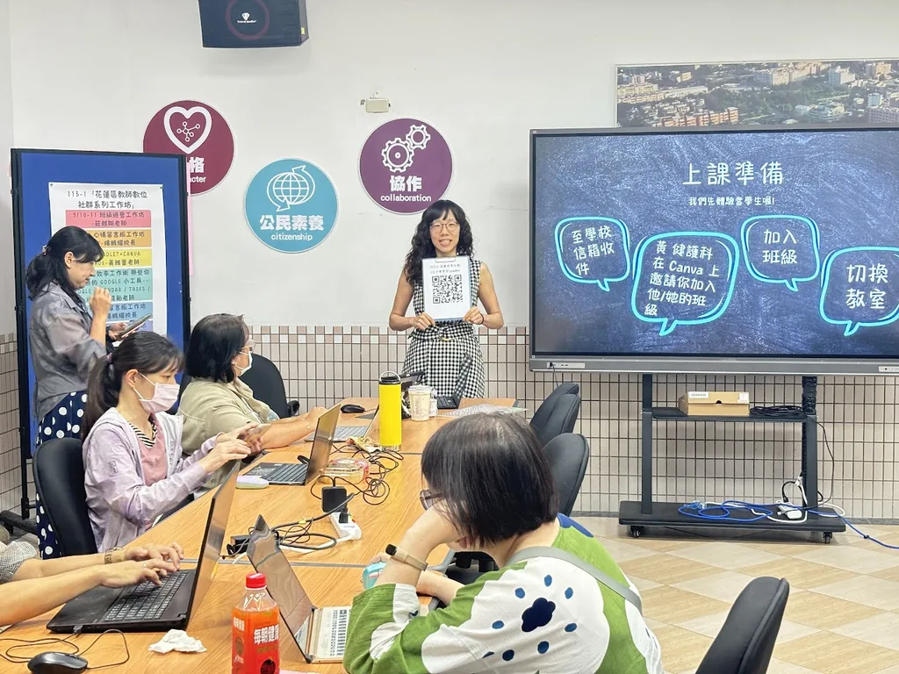
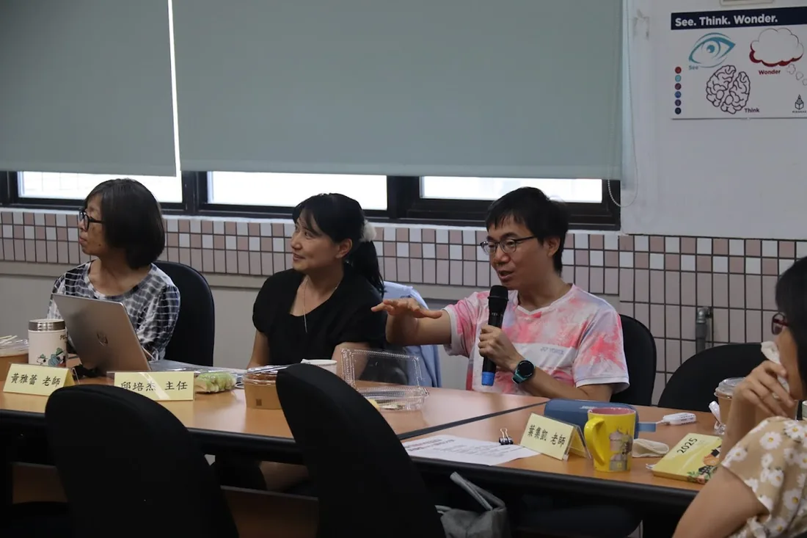
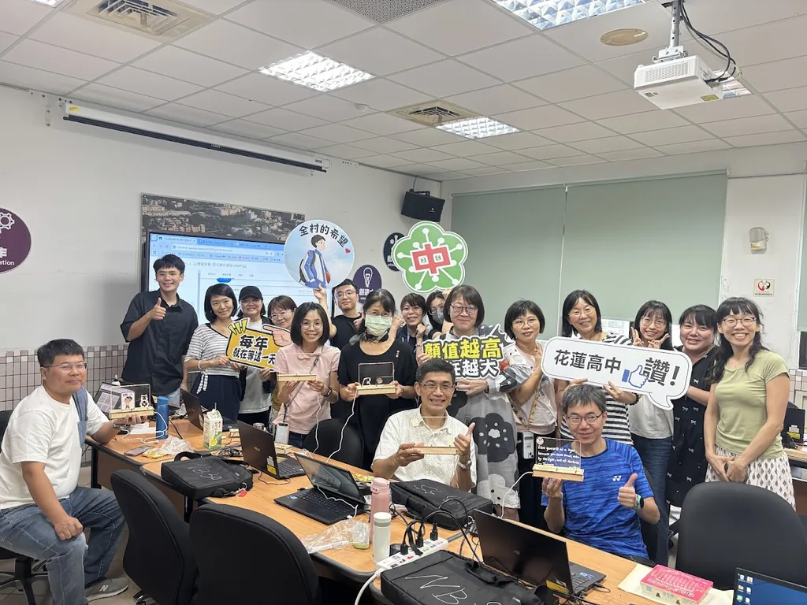
SCIENCE AT HLHS
從競賽、課程、社團到營隊，花中的學生在這裡把好奇心變成研究與實作。
花中於 2022、2023、2025 年榮獲旺宏科學獎的學校獎及校長獎。除此之外，國際奧林匹亞競賽近年榮獲 15 位國手、8 位世界金牌，成績媲美西部名校，數理資訊學科能力競賽曾獲全國一等獎，科學展覽獲評全國績優學校。
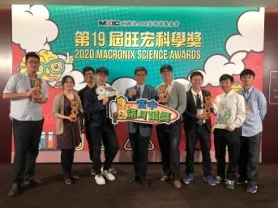
近年榮獲 15 位國手、8 位世界金牌
高中生的小諾貝爾獎。2022、2023、2025 年榮獲學校獎及校長獎
另有普通班高二「社會科、自然科探究與實作課程」。
連續辦理 20 餘屆
專案培育
自然科學領域部定必修共 12 學分，其中三分之一（4 學分）為跨科探究與實作
社會領域的探究與實作以加深加廣選修開設
論證與建模、表達與分享
學生組成團隊，一起討論、找出可能影響結果的變因，再調整與測試，不只是照著手冊操作實驗
自然探究與實作的課程成果，可納入學生的學習歷程檔案。
善用 AI 提升備課、個人化學習與即時回饋，同時防範思考卸載與深度閱讀退化
並善用 Google Classroom 與線上非同步課程，協助補課與縮減學習落差
提示詞運用、學術誠信與 AI 倫理
AI 應用研習、跨科共備與觀課
以及全英教學、社會情緒學習（SEL）種子學校等計畫
從不使用 AI 到 AI 主導，明確規範各層級的使用方式與揭露原則
資料來源：2021 年花中簡介摺頁，近年成績待更新。
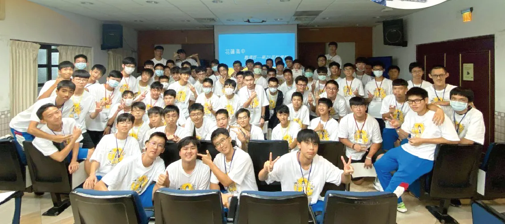
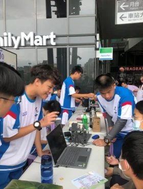
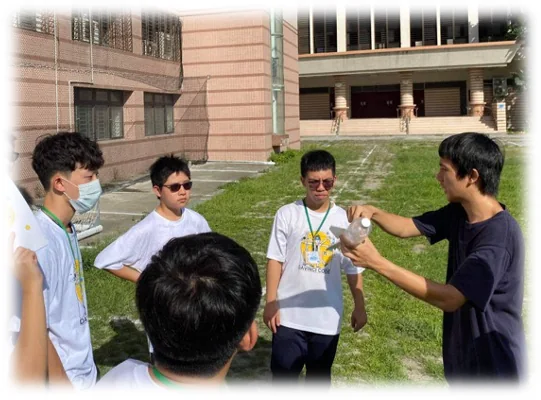
LITERATURE & ARTS
文學、音樂與人文閱讀，是花中人文關懷的日常。
校友作家到校分享
國語文競賽曾獲花蓮團體冠軍
全國人文經典閱讀比賽
例如校友作家林宜澐先生回校分享
114 學年度投稿並有多篇獲獎
另有圖書館利用教育、晚自修與節慶手作活動
音樂藝才班深受郭子究老師的影響
國樂、西樂（男女兼收）。來自郭子究老師的深刻影響，肩負洄瀾音樂的傳承及發揚
管樂團合奏：花蓮 A 組冠軍，全國優等
參與社區音樂會演出
花蓮學分組課程 C
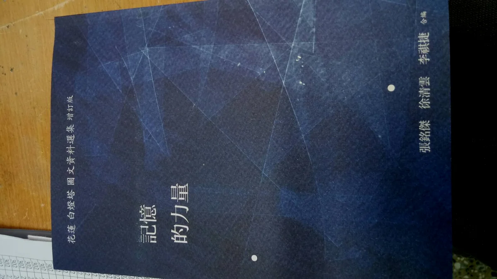
《記憶的力量》由花中歷史老師張銘傑、徐清雲與校友李祺捷編著。編者以歷史照片與花蓮作家的文章，訴說白燈塔的「文化記憶」，也記錄它在花中人與花蓮人心中的份量。
一本記憶花蓮白燈塔的專書。編者為花中歷史老師張銘傑、徐清雲與校友李祺捷，以歷史照片與花蓮作家的文章，訴說白燈塔的「文化記憶」。
各自的白燈塔書寫，例如校友楊牧的〈搜索者：花蓮白燈塔〉。
白燈塔存在於 1939 年至 1980 年 6 月 30 日。舊報導由邱上林學長提供，更生日報 2019 年 5 月 27 日刊登。
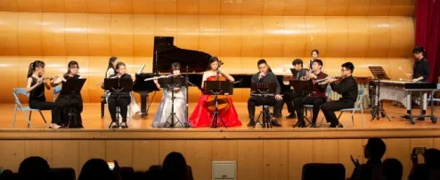
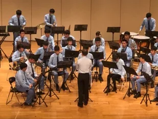
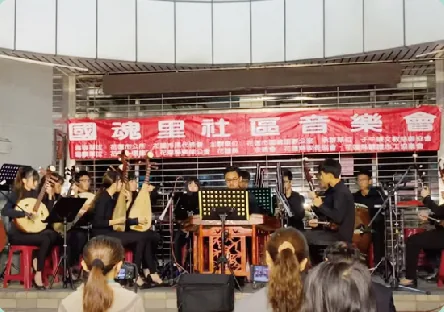
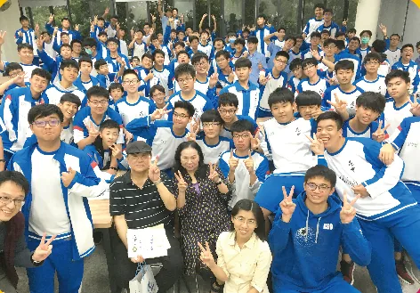
GLOBAL EXCHANGE
從姊妹校、教育旅行到外師入班，讓學生在校園裡就能接軌世界。
每年一次
高一、高二每週一節，提升英聽能力
日本交流協會（中／日）
東華大學、慈濟大學
大手牽小手計畫
與日本岩手縣不來方高校交流
高二多元選修課程，由本校地理科教師授課
地方發展協會、大學外籍生入班分享
本課程與大手牽小手專案計畫結合
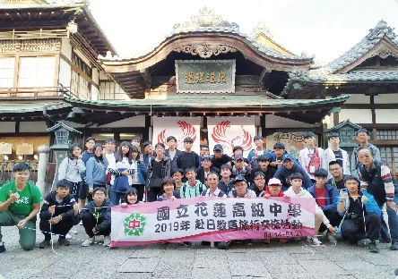
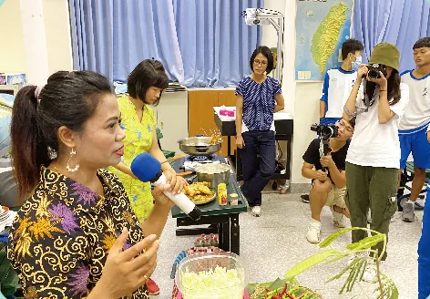
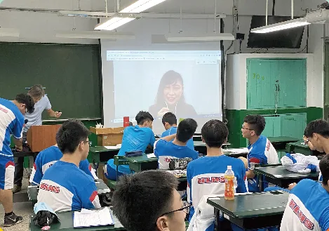
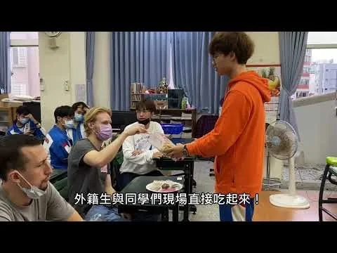
CLASSES
四種班別，讓不同專長的學生都有發揮的舞台。
專項：國樂、西樂（男女兼收）
Musical Talent Class · Specialized subject: Chinese music and Western music (for both boys and girls)
來自郭子究老師的深刻影響，肩負洄瀾音樂的傳承及發揚。
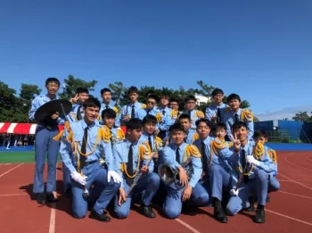
招收男生 · 文理全才、競賽常勝、國手搖籃、多元展能
General Class (for boys only) · All-rounder in arts and sciences; winners of competitions; cradle of national players; development of diverse abilities
競賽常勝、國手搖籃、專案培育
Math- & Science-gifted Class · Winners of competitions; cradle of national players; talent cultivation projects
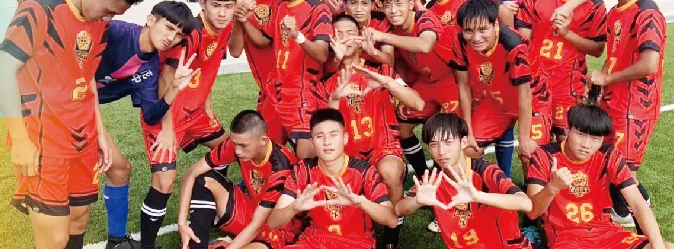
專項：男子足球、網球（男女兼收）
Sport Talent Development Class · Specialized subject: men's football, and tennis (for both boys and girls)
專業教練、全力扶植、強勁球風、邁向卓越。
LOCAL STUDIES
由白燈塔出發，認識腳下這塊土地。
戶外踏查：北線踏查江口良三郎紀念公園，南線踏查二二八和平公園。
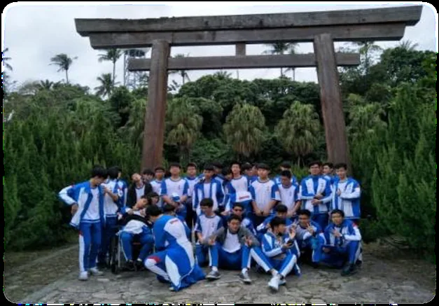
花蓮學於高一每週四第 3、4 節實施，由歷史、生物、國文、英文、美術、音樂、地理、資訊、家政等九科教師共同參與，帶領學生從不同領域認識花蓮。
由教師團隊合作，獲得評審肯定。
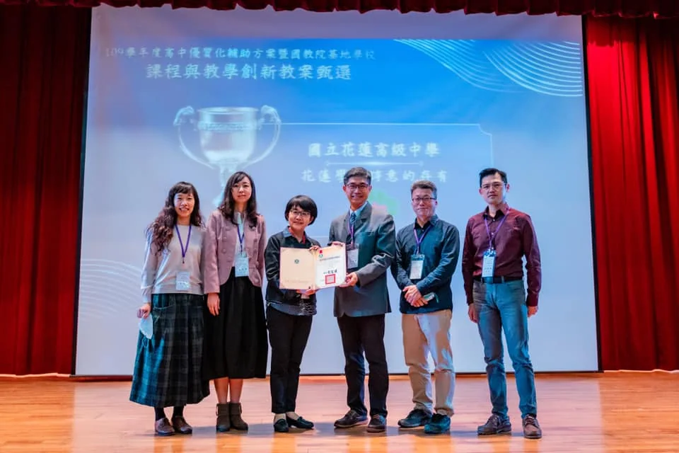
LEARNING PORTFOLIO
高一、高二就開始累積，把備審壓力分散在三年，而不是高三才「軍備競賽」。
每學年由學生勾選至多 6 件，由學校提交至中央資料庫
每學年由學生勾選至多 10 件，由學校提交至中央資料庫
由學校每學期上傳
由學生自中央資料庫勾選提交
一個好作品勝過三個普通作品
說一個屬於學生自己的故事：動機、興趣、能力
減輕高三備審資料的壓力
自主學習專題報告、自然探究與實作、高一資訊科技、高二歷史報告、高二物理、高一地理、高一國文、高一英文。以下是部分學生成果（點擊可放大）：
認識自我與環境，做出適合自己的生涯抉擇
提供升學資料與職涯資訊
CAMPUS MAP
位於花蓮市民權路，南側為海岸路，校園內設有科學館、圖資大樓與郭子究文化館。
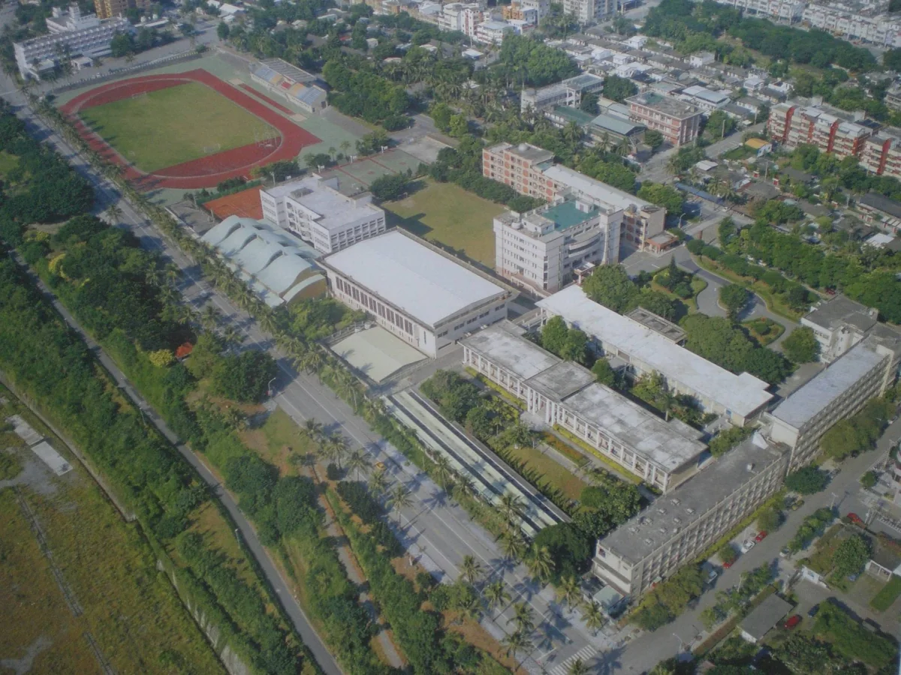
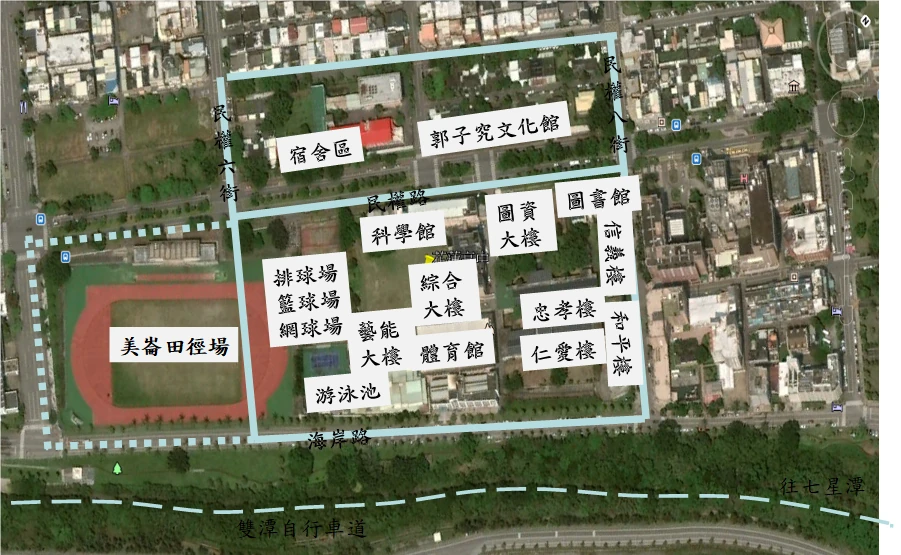
CAMPUS LIFE
戶外教育、露營、社團，以及走進社區的服務與音樂。點擊照片可放大。
每學期都有固定的社團、競技與表演舞台。
另有桌球賽、羽球賽
Year 11 Excursion
Higher Education Sprout Project – Visiting Universities
School Science Fair
International Education and Joint Training for Student Leaders
用「食衣住行育樂」六個面向，培養自我覺察、責任決策與人際能力。
RESULTS
近年來國立大學暨醫學系比率（%）。
110–113 年為四年平均值。
HONORS
● 標示者為科學相關。
部分成績來自 2021 年花中簡介摺頁，仍在持續更新。
115 ADMISSIONS
國立大學暨醫藥學系錄取率創下 65% 的歷史紀錄。
連續五年突破 55%
台清交成政、醫科藥學與台科大、北科大
並連續第 14 年為基宜花東屏五縣市之冠
每年承辦
每年承辦
人生沒有白走的路，每一步都算數。
揚才展能、適性發展 · 以天下為己任．惟詩書敦其仁